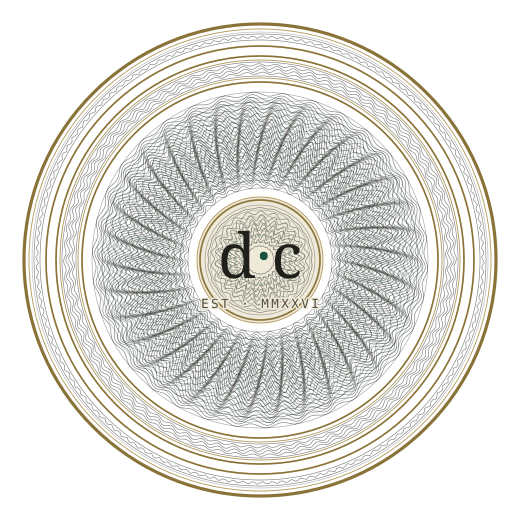
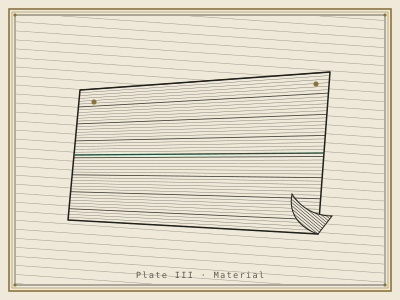
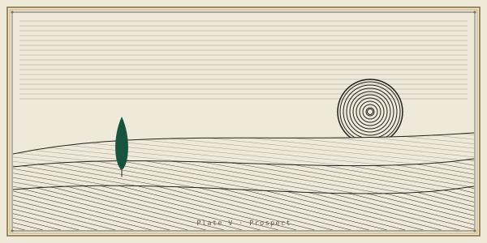
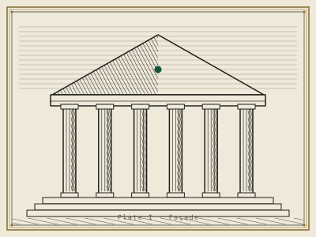
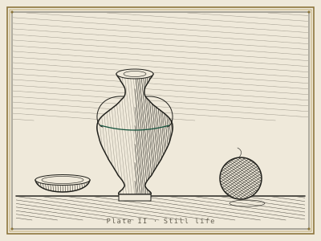
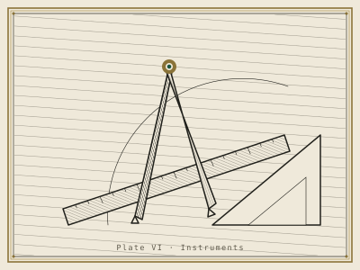
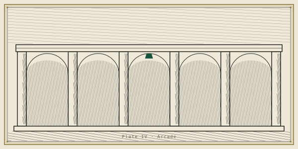
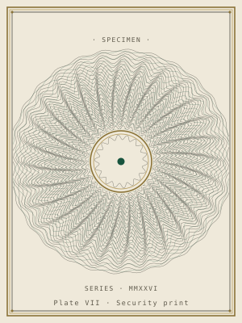
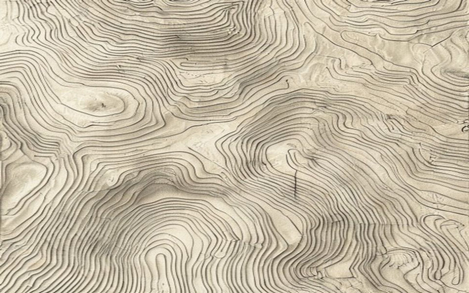
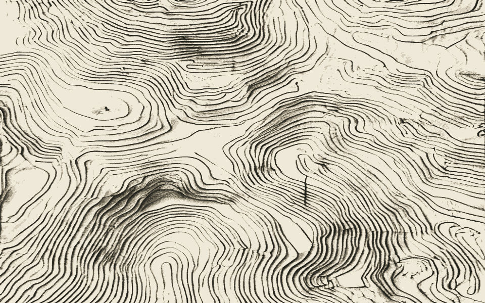

Evidence-based design system
Design that earns its ink.
Colour, charts, type, and layout that read as one body of work — proven over fashionable, every choice inside the accessibility floor.
Every colour pairing is computed for WCAG AA, never eyeballed.

The signature
Engraved to last.
A design system set like a security engraving: a high-contrast serif marquee pressed into heritage stock, hairline rules holding every column true, and a single deep-green mark spent only where a decision is made. The brass is foil — it edges the page, it never speaks.
It reads the way old money sounds: certain, unhurried, with nothing to prove. Built to be trusted with the number today, and to still look composed a decade from now.
The house style
What it is, and where it belongs.
A plain account of the house style — the world it lives in, the small set of marks it is built from, and the pages it was made to be set on.
Quiet authority — the confidence is the restraint.
The house style is set as a security engraving. Its world is the heritage instrument of record: the engraved certificate, the private-bank prospectus, the document you are handed rather than shown. A cream laid stock carries the page; a high-contrast serif marquee is pressed into it; hairline rules hold every column true; a guilloché rosette stands where a maker's mark belongs; brass edges the page as foil and never as voice; and a single deep-green mark is spent only where a decision is actually made.
Its register does not raise its voice, because the restraint is the argument — the fewer marks a page spends, the more each one is worth. It reads the way old money speaks: certain, unhurried, with nothing to prove. Opulent, calm, exact. You should feel you are holding something engraved, expensive, and permanent.
Reach for it
- Prospectuses, offering documents, and annual letters
- Wealth, heritage, and private-bank identities
- Certificates, credentials, and instruments of record
- Editorial reports meant to be kept, not skimmed
- High-trust financial and legal surfaces
- Any page whose value is that it looks permanent
Set it aside for
- Playful consumer apps, toys, and games
- High-density dashboards that must flash loud, fast signals
- Fast-moving SaaS that re-skins itself each quarter
- Anything that must feel cheap, urgent, or casual
- Discount, flash-sale, and growth-hacky surfaces
- Interfaces where speed of scanning must beat gravitas
The complete set
The eleven instruments.
Eleven instruments make up the set. Each owns one lever of the craft and defers the rest, so they compose instead of contradict — colour to the colourist, type to the typesetter, the chart to the one who reads data. Below is the full index; every line opens its chapter.
I Developing-style
How the marque was drawn.
Map the surrounding convention, borrow from a domain outside it, reduce to a small fixed vocabulary, and hold a few marks constant on every page.
Developing-style is the house method for a look that could belong to no one else. Distinctiveness is not decoration added to a page — it is deviation from the surrounding convention, so the method is: name the category's defaults, then leave them. It runs in one motion — study a model from a domain you never draw from and deviate from it (a familiar exemplar only fixates you), reduce the result to a tight, repeatable move-set, and hold a few of those marks constant everywhere.
Reach for it when a design keeps arriving generic or derivative, when a brief asks for something ownable and unlike its category, or — as here — when the look must be developed in the client's place. The evidence is plain on one point: the character has to live in the structure, not sprinkled on top of a standard layout. Strip the ornament and an ordinary website must not be left behind.
The convention it left
The category is the evidence-based design-system page and the SaaS marketing site: a dark hero, a gradient mesh, glass cards with drop shadows, one neon accent, sans-serif throughout. On the formal axes that norm sits painterly, open, soft-edged — glowing and edgeless.
The domain it borrowed — unfamiliar on purpose
Not another website and not another design tool, but security-print engraving: heritage stock certificates, banknote guilloché, the private-bank prospectus. Copying an unfamiliar model restructures the work; a familiar one fixates it. We moved the norm to its opposite pole — linear, closed, exact: incised line, ruled edge, precise register.
The deviation, on the record — preclude, then substitute
Reduced to a small vocabulary — the specimen plate
Held constant on every plate
Four marks recur everywhere, and the hand lives in them: the laid grain in the stock, the brass filet set over an ink rule, the single green mark reserved for a decision, and the letterpress depth in every display line. Take the vocabulary away and these remain — which is where the character actually is. The signature is the form, not the props.
II The composition instrument
Composition & design theory.
Composition is the arrangement lever: where every mark sits, at what size, in what relationship, so the whole field reads as one deliberate, meaningful piece rather than a template. It owns hierarchy, gestalt grouping, figure-ground, the structural signature, and the way meaning arrives from the arrangement itself — three identical lines become a triangle, an H, or a table depending only on how they are joined. Colour, type, chart form and screen layout are handed to the instruments that own them; composition decides the order in which those levers arrive.
Reach for it when arranging any artifact where arrangement carries meaning — a certificate, an identity, an editorial spread, a data report, a screen — and when a design keeps reading generic, cluttered, or derivative and you need to name why. Its governing rule: name the single takeaway first, then let every element either advance it or be cut.
Demonstrated — this page's own structural signature
- 1 Hierarchy & contrast The marquee — "Design that earns its ink." — is the one dominant element; scale alone sets the reading order before a word is read. Principle 9 · hierarchy & contrast [STRONG]
- 2 Figure-ground The seal reads as figure because its inked strokes are darker, convex and surrounded; the cream laid stock stays ground. Engineered, not accidental. Principle 2 · figure-ground [STRONG · Wagemans 2012]
- 3 Similarity & continuity The brass filet and guilloché fleuron recur unchanged at every act-break, so the eye reads them as one repeating signature binding the whole document. Principle 10 · gestalt grouping [STRONG]
- 4 Proximity Each chapter's lines share one rail and one hairline register, so separate marks group into a single catalogue line rather than loose text. Principle 10 · gestalt grouping [STRONG]
- 5 The felt grid — Ghost Grid The brass frame and constant margins state the system by alignment alone; the grid is felt, never drawn — the mark of a premium, restrained layout. Fusion 19 · Grid + Reduction (principles 1 + 8)
- 6 The Specimen Roman enumerators run I–XI down the catalogue, so eleven chapters read as one numbered specimen set — the page is a catalogue of its own system. Fusion 23 · Grid + Generative
The move here is fusion, not juxtaposition: every principle above agrees on one quality — quiet engraved authority — and nothing on the page is set to argue with anything else. That is the correct choice for a design whose essence is restraint; forcing a tension onto it would over-reach. The whole field resolves to a single takeaway you can state at a glance: one engraved system, held to evidence.
III Perception & colour
Contrast before hue.
This instrument governs how the eye reads quantity and colour, and its order of operations is fixed: choose the encoding before the hue, and settle contrast and brightness before hue. Position and length are decoded most accurately; area and colour least — so colour is spent last, and only where meaning has nowhere better to sit. Every text and every signal on this leaf is measured against WCAG 2.2; no hue is asked to carry meaning alone; and the whole set is proofed against colour-vision deficiency.
Reach for it whenever a palette, a ground, a contrast ratio, or a data encoding is in question — or when a claim about colour and the eye needs adjudicating (dark mode, blue light, “easy on the eyes”). It holds the accessibility floor and yields the look built around it — never the floor itself.
Specification of inks — ratio measured against the field, cream #efe9da
Two further tones sit below the 3:1 graphical floor by design — brass-soft (2.25:1) and the rule hairlines (1.31:1). They are decorative only: never a data mark, never a boundary a reader must find, never text (WCAG 1.4.11 exempts decorative objects). The pop (4.56:1) and the negative brick (6.72:1) are held visually apart — the pop is a purer, brighter cinnabar and appears only as a single sealed mark, while the brick lives quietly among tabular figures — so the two reds are never asked to be told apart.
Colour-vision deficiency — how the palette survives
Eight men in a hundred carry a colour-vision deficiency, red–green the common form. Ledger’s
green accent #17533d and cinnabar pop #c0362c are precisely that pair:
simulated for deuteranopia, the green collapses toward olive #49473e and the pop
toward mustard #817426 — hue alone could not separate them. The certificate is
immune anyway, because nothing rides on that difference. Structure and data are carried by a
neutral ink→paper lightness ramp (13.50:1 down to the faintest rule), which colour-vision
deficiency leaves fully intact; the green is the sole functional colour and is never a data pair
with the red; and the pop appears exactly once — as a sealed shape carrying the word
“certified,” a mark rather than a hue-code (WCAG 1.4.1). Positive-versus-negative in the
figures likewise leans on the sign and position of the number, not on green-versus-brick alone.
Wrong — hue-only legend
The eye must ferry each swatch back to its band — a WCAG 1.4.1 hue-match. Under deuteranopia the green slides onto the gold’s olive and the mapping fails outright.
Right — bands named where they sit
Ordered by lightness, labelled in place. Colour merely groups; the words carry the meaning, and a lightness order survives colour blindness. This is why every band on this leaf names itself, and the green is spent only on the aggregate.
IV The type
Set to be read first.
Typography sets the type this prospectus is struck in — the faces and how they pair, the size and the line-length, the leading, the modular scale that ranks every heading, and the figures that let a column of numbers align — then web-font loading and the accessibility of the text itself. One rule governs the rest: legibility before personality.
What a face says is real, but it is taste, not speed. Controlled work finds no universally faster font and no serif-over-sans advantage under matched conditions (Wallace 2022; Arditi & Cho 2005 — STRONG), so the proven levers are spent first: comfortable size, a generous x-height, a sane measure, clear hierarchy. Reach for this whenever type is set or judged — choosing or pairing faces, fixing a measure or leading, building a scale, setting numerals for a table or chart, or auditing a claim. “Serif reads better,” “dyslexia fonts help,” “ugly type aids memory” are each MYTH. Every choice below carries its warrant: STRONG is a controlled study or standard, CONVENTION is settled practice with weak or no controlled support. The kit is taste on a proven foundation — the split is stated, never hidden.
Three hands, three jobs
Display · the marque
earns its ink.
A a G g R e f y & 6 8
Instrument Serif. A high-contrast serif — the hairlines that make it elegant thin out and vanish under ~20px, so it is kept to display sizes only, never body. Don’t scale a display face down; reach for the text cut instead (Minakata & Beier 2022 — STRONG).
Text · the anchor
A a G g R e f y & 6 8
Plus Jakarta Sans. A high-x-height, screen-clean grotesque that carries the paragraph, the interface, and every chart label. Chosen first — the body face the rest of the system references, paired with the serif by contrast, not similarity (Brown; Lupton — CONVENTION).
Labels & numerals · the engraving
# % § − ↑ ↓
1 l I · 0 O · 6 8 · 3 9
IBM Plex Mono. Monospace, so every digit is one width — tabular by construction. Built with per-digit clarity (a narrow 1 with no bottom crossbar, a straight-leg 7, open 3/9) that cuts misreads at a glance (Beier, Bernard & Castet 2018 — STRONG). It also signals “this is data.”
The measure & the leading
This column is set the way the prospectus sets its prose: Plus Jakarta Sans at 17px / 1.0625rem, leading 1.62, capped at a measure of about sixty-six characters. Short lines aid comprehension and long lines read as fast on screen, so sixty-six is the compromise Bringhurst named — inside the 45–75 band, never a law. The leading sits a touch above the 1.4–1.6 prose range; the extra air belongs to the cream stock, and the text still survives WCAG 1.4.12’s 1.5× spacing test.
Size in rem, not px, so the reader’s
own base size and zoom are respected (WCAG 1.4.4 / 1.4.12 —
STRONG). Left-aligned, ragged-right — never justified
(WCAG 1.4.8).
The modular scale, as used on this page
| Role | Face | Size · px / rem | Leading | Step |
|---|---|---|---|---|
| Hero marque | Instrument Serif | 108 / 6.750 | 1.00 | ×2.08 |
| Section marque | Instrument Serif | 52 / 3.250 | 1.02 | ×2.17 |
| Subhead | Plus Jakarta SemiBold | 24 / 1.500 | 1.25 | ×1.20 |
| Lede | Plus Jakarta Sans | 20 / 1.250 | 1.55 | ×1.18 |
| Body — anchor | Plus Jakarta Sans | 17 / 1.0625 | 1.62 | ×1.21 |
| Caption / label | IBM Plex Mono | 14 / 0.875 | 1.40 | — |
A non-constant ramp on purpose: the reading sizes climb at ≈1.2 (a minor third); the display makes one deliberate ≈2× leap to the engraved marque. A strict constant ratio is taste, not evidence — Material and Carbon both ramp non-geometrically (§3 — CONVENTION), and size outranks weight, so the larger, lighter serif still leads. Eyebrow labels drop to 12–13px only as tracked, uppercase mono — glance labels, where caps are physically larger; running text never falls below the ~16px floor, and the anchor sits at 17.
Why the numbers are engraved in mono
Plus Jakarta Sans. Each digit takes the width it wants, so a 1-heavy row runs short — the right edge is ragged and the column will not stack. Right for a sentence, wrong for a table.
IBM Plex Mono. Every digit is one width, so every row is the same length — decimals and thousands lock to the brass guide. Watch the right edge: flush only here.
Same numbers, two faces. That is why every
figure in the scale table above — and in the tables and charts that follow — is set in IBM
Plex Mono with font-variant-numeric: tabular-nums (§5 —
CONVENTION + mechanical fact; MDN,
OpenType). Proportional figures in a number column is the classic misstep.
V The instrument of charting
The right form for the question.
Charting is the shape half of data visualization: choosing which graphical form answers a given question, then drawing it so that nearly all the ink is data. It reads the task — a trend, a ranking, a part-to-whole, a deviation from a norm — and the shape of the numbers, then reaches for the Tufte form that fits: a slopegraph for a re-ranking, columns from zero for a magnitude, a Cleveland dot plot for ranked categories, a bullet against a target. Colour it never decides; that is deferred, whole, to perception and colour.
Reach for it whenever a page must state a number honestly rather than flatter it. The craft is subtractive — erase the border, the fill, the heavy gridlines; let the axis report only the data's true span; label each series at its own end so the eye never ferries back to a legend. And the floor is absolute: no baseline truncated where it would mislead, no dual-axis trick, no length dressed as an area. Where a window must be cropped, the crop is drawn onto the chart itself, as a range frame, so the reader sees precisely what was set aside.
Three honest forms, one shared restraint
Regional composite index · 2019 → 2024
Quarterly revenue vs. plan · $M
On-time delivery by region · %
Headline metrics, at a glance
The roadmap
VI Imagery
Images, drawn to belong.
The imagery instrument selects, critiques and directs pictures — photograph or illustration. It decides photo-versus-illustration, directs code-feasible tonal treatment (duotone, grayscale, grain, scrim), writes the alt text, and makes light programmatic illustration in SVG. It owns one floor outright — the non-text-content / alt-text floor — and defers the rest: colour to perception-and-colour, arrangement and figure-ground to composition, type to typesetting.
Reach for it whenever a page needs a picture, because the evidence is blunt: an image that does not carry the message costs comprehension — decorative, off-brief filler is not neutral, it measurably subtracts. So no generic stock. And on a premium page a cheap graphic reads worse than none at all — it cheapens the whole. That is why Ledger draws its own: every plate here is engraved in code, on-register, self-contained.
The Ledger imagery stance
Illustration-led
Concepts, not credibility, are the payload — so we draw, we do not photograph.
Engraved duotone
Two inks far apart in value, carved from the page's own palette — reads as made, not rendered.
Warm-neutral monochrome
Ink and cream carry the tone; the one heritage-green mark is the only colour a plate spends.
Never competes with the data
A plate sits quiet in negative space and points; the numbers stay the subject.
One treated image, and the alt text it ships with

Informative image → alt states the point
The plate carries meaning, so its alt describes what it says — the subject and the one green mark — not "image of a plate":
<img src="…/ledger-plate-material.svg"
alt="Engraved plate: a laid-paper swatch
pinned at top, one ruled line struck
through it in heritage green, the lower
corner curling — a drawing of the page's
own stock.">
Decorative ground → alt is empty
A texture that carries no message is hidden from assistive tech, so it is not read aloud as noise:
<!-- treated engraved ground, purely decorative -->
<img src="…/gen-ground-treated.jpg" alt="">
The drawn architecture line-plates
A portfolio of plates
One hand across many subjects — architecture, still life, material, ornament — engraved, never photographed. Held in cream boxes so no brass frame is ever cropped.






VII Interface · structure & wayfinding
Where the eye goes first.
The structure beneath the ornament — laid open, then proven.
This instrument sets the structure the rest of the page hangs from: the skeleton, the grid its columns align to, the spacing that groups what belongs together and parts what does not, and the hierarchy that decides what the eye meets first, next, and last. It places navigation where the hand expects it and keeps the active place marked; it orders figures into tables read straight down a column, and escalates to an interactive data grid only when filtering or thousands of rows earn the weight.
It is grounded where evidence exists — the accessibility floor and processing fluency are the load-bearing findings — and it names taste as taste elsewhere: the column count, the line measure, the Z-pattern are offered as defaults, never dressed as law. Reach for it to structure a screen or repair one that reads cluttered, hard to navigate, or without a focal point. Four floors do not bend — a visible focus ring on every target, a hit area of at least 44 pixels, contrast that clears AA, and a hierarchy a stranger reads in three seconds. Below, the same system this page stands on, drawn in the open.
The grid — container ≤ 1120px · gutter clamp(20 → 56px)
Three column structures, all aligned to one centred container. The index grid is auto-fit · minmax(322px, 1fr) — it sheds columns as the page narrows, then stacks. Alignment reads as order; misalignment reads as broken. [fluency, load-bearing]
The spacing rhythm — the recurring steps, in px
One step-set governs every gap and pad, so proximity does the grouping. Two tokens stay fluid — the gutter --pad clamps 20 → 56, the section rhythm clamps 46 → 82 — so the page breathes with the viewport. [gestalt proximity, upheld; exact numbers, taste]
Navigation — where am I · where can I go · how do I get back
Primary nav stays visible — hiding it behind a ☰ cut discoverability >20% and slowed desktop tasks ≥39% in NN/g's controlled test. [visible-nav, strong]
The data table — tabular figures, aligned; minimal rules
| Window class | Min width · dp | Panes | Nav pattern |
|---|---|---|---|
| Compact | < 600 | 1 | Bottom bar |
| Medium | 600–839 | 1 | Nav rail |
| Expanded | 840–1199 | 2 | Nav rail |
| Large | 1200–1599 | 2 | Side nav |
| Extra-large | ≥ 1600 | 3 | Side nav |
Material 3 window size classes — the reflow schedule this page keeps: as width grows, a bottom bar becomes a rail, then side navigation. Numerals are tabular, right-aligned; the identity column is a row header. [convention]
Actions — engraved-underline CTAs, one reserved for the primary
Proof of floor. Every interactive target ≥ 44px · a visible focus ring on
Tab through crumbs, menubar, tabs and buttons · the breadcrumb marks
aria-current="page" · the open menu item carries aria-expanded ·
the table is built on <th scope> with tabular figures · status is never
colour alone. Menubar items are real focusable links, not inert spans.
VIII Visual identity
The mark, and the reason it holds its ink.
Branding is the identity advisor of this set. It fixes the communication objective, then rules the mark by fit — its shape, how descriptive or abstract it runs, its symmetry, its complexity budget, the brand colour's intent, and the personality the surface should project. It reads on evidence, not taste: it separates findings proven in controlled studies [STRONG] from canonical-but-unverified literature [ESTABLISHED] from the [MYTH]s the trade repeats — "logos must be simple," "descriptive always wins," "an ownable colour always helps." It is advisory, not production: it directs the mark and polices one voice, then hands the drawing to imagery, the invented style to developing-style, the colour science to perception-and-color.
Reach for it whenever a mark is being designed or judged — logo shape and descriptiveness, symmetry, typeface treatment, complexity, brand colour, a redesign's risk to a committed audience, or reading the personality a page projects. It does not name, position, or write taglines; it owns the visual-identity layer and the fluency and attachment mechanisms that explain why a mark bonds.
The Ledger mark is a responsive system, not one drawing. The same invariants — brass-ringed medallion, d·c monogram, green dot — are held constant at every size; only the engraving scales. The hero carries full guilloché; the favicon drops it entirely so the mark stays legible at 32 px. (Hero shown at moderate density; imagery supplies the densified production seal — denser rosette, double filet, denser lattice — per the seal-weight ruling.)
Shape
A circular engraved medallion — the coin, wax-seal, and banknote-stamp convention of certified value. Circular carries no liking advantage on its own and lifts only soft attributes; it is chosen here for genre fit ("this is a seal"), not for a halo it cannot deliver.
Jiang, Gorn, Galli & Chattopadhyay 2016 · logo shape & attribute-congruence · [ESTABLISHED §C′]Symmetry
Radial symmetry. Symmetry is the default for every personality except exciting, where asymmetry is the one evidence-backed exception. Ledger is not exciting — it is competent and calm — so a symmetric struck seal is the correct register, and asymmetry would fight it.
Luffarelli, Stamatogiannakis & Yang 2019 · the visual-asymmetry effect · [STRONG §C]Descriptiveness
Abstract, not descriptive. A literal "design" picture — a pen, a ruler — would cheapen the heritage register. The guilloché-and-monogram encodes certified / authentic through the security-print genre itself, which is where a heritage mark's authenticity read lives. Descriptiveness helps unfamiliar brands in neutral categories, but its benefit routes through processing-fluency-to-authenticity — and the engraving delivers that authenticity without literalism.
Luffarelli, Mukesh & Mahmood 2019 · descriptiveness → equity · [STRONG §B] · fluency mechanism [ESTABLISHED §I4]Complexity
Moderate elaboration, deliberately capped. Recognition peaks at moderate, not maximal, elaboration; and complexity is a media-budget multiplier — a denser mark costs more exposure to become fluent. The seal carries enough guilloché to read as engraved, then stops, and the favicon drops the guilloché so the mark stays fluent at 32 px. This is why densification is a hero-only layer, never a scaled-down hero.
Henderson & Cote 1998 · moderate-elaboration optimum · [STRONG §A] · Janiszewski & Meyvis 2001 · complexity × exposure · [STRONG §F]Brand colour
Desaturated cream, ink, and brass, with one deep-green accent. Low saturation and a near-monochrome field raise perceived status through continuity and heritage — the old-money read Ledger targets — and the effect is strongest under a heritage (not innovative) positioning. Held above the contrast floor at every step: brass is foil, never small text. Colour science is perception-and-color's to own.
Zhou et al. 2025 / Yue & Xia 2026 · saturation → heritage status · [STRONG, single-source §G6] · contrast floor → perception-and-colorPersonality read
The target is competence · sophistication · sincerity — prestige and trust, quiet authority. Blue conventionally carries competence, but hue meaning is learned and contextual, not law: here the struck seal, the engraving, and the desaturation carry competence and sophistication without a drop of blue. The mark aims past mere liking at attachment — the self-bond that is the only construct shown to drive a price premium and actual share.
Labrecque & Milne 2012 · hue → personality [STRONG §G2] · Aaker 1997 + Geuens 2009 caveat [STRONG §H] · attachment: Thomson / Park [STRONG §I1]Redesign risk
Densifying the seal this round is a consistency-preserving refinement, not a redesign — same shape, symmetry, monogram, palette. That distinction is load-bearing: audiences punish inconsistent redesigns hardest, and the punishment scales with commitment. Adding ink inside the existing identity carries none of that risk; flipping the shape or dropping the monogram would.
Walsh, Winterich & Mittal 2011 · redesign × brand commitment · [STRONG §E]One mark, struck once, read at every size — the whole page signed by the same hand.
IX Brand absorption
Read as them — not as us.
The toolkit's one conditional instrument: it unseals only to adopt a brand that already exists, and hands the team a Direction it must print from.
Brand absorption stays sheathed while a new house style is being invented — that commission belongs to developing-style. It draws only when the brief is to adopt an existing brand: a facelift, a refresh, a reskin, any work that must still read, unmistakably, as them. Handed the real materials — a live site, the logo files, a guidelines folio — it reads the brand from what actually ships today, never from memory, and engraves colour, type, mark, imagery, voice, and the structural hand into one Brand Direction.
That Direction is not a suggestion; it is the plate every other specialist prints from. Where it exists it outranks design-craft's own defaults and house look — colour, type, layout, and composition serve it; house-style yields entirely; and how far the mark may be moved is a redesign-risk question referred to branding, never a styling reflex. The capture has two halves, and the second is mandatory: the surface signature can be measured, but the hand — how the brand moves — must be named in words, or you have sampled its pixels and missed its brand. What follows is that instrument turned on this very page: were Ledger handed in as a client brand, this is the one-page Direction absorption would return.
Brand Direction · one page · binding
design·craft — captured as a brand
Precedence. For this work this Direction overrides design-craft's own defaults and house look — house-style yields; colour, type, layout, and composition serve the values below. How far the mark may be moved is a redesign-risk call for branding, not a styling choice.
The hand — what a colour-picker can't see
Ledger moves like a private-bank prospectus: restrained-monochrome, exact, unhurried. Ink does the work; colour is rationed to a single green, spent only at the moment a decision is made; brass edges the page and never speaks. The confidence is the restraint — expensive, permanent, with nothing to prove.
Text / UI — Plus Jakarta Sans, 17px, measure ~54ch, leading 1.62.
Labels & figures — IBM Plex Mono, uppercase, .2em tracking; numerals tabular. Never set the marquee in the sans, or the figures in a proportional face.
"Design that earns its ink." · "Engraved to last." · "It reads the way old money sounds."
30-second fit test — cream ground dominant? serif marquee? green spent once per decision, brass only as foil, the guilloché mark present, the voice unhurried? Any "no" and the screen is drifting toward house style — our brighter palette, a second accent, a sans marquee, or slick colour stock. That drift is design-craft, not Ledger.
X Generative imagery
Generated, but governed.
When a page needs an image that no one can select or commission — an atmospheric ground, a texture, a duotone or mood asset — this instrument generates one from the team's own requirements: palette, theme, dimensions and styling assembled into a single brief, so the result fits the page instead of arriving as stock. It is embellishment, reached for only when hand-craft — a drawn plate, a coded illustration — genuinely cannot do the job; and it yields a raw ground to be graded into the design's own hand, never a finished picture dropped in.
The pipeline — generated, directed, placed


A ground, not a graphic.
Dimmed under opaque cream, the plate lends material depth while this type holds AA over it — supporting the words, never becoming the subject.
The three governance gates
- Reachability, proven first. A free, keyless service is not guaranteed to answer, so it is probed live before any plate is struck. Unreachable simply means the page is set without it — nothing here ever depends on it.
- Approved by the art-director, every result. Nothing generated is shown until the director judges it worthy and in register; a plate that falls short is discarded, not softened behind a scrim.
- Sparing, and supporting only. Used only where hand-work cannot serve — the ground it makes is held in negative space, colour-matched to the palette, and clears both the honest-imagery and the alt-text floors. It supports the words; it never becomes the subject.
Where Ledger would — and would never — use it
Would use it
Faint material grounds and textures in negative space, dimmed behind opaque content — atmosphere that no flat drawing can fake, always subordinate.
Would never use it
The seal, the plates, any mark or concept — and anything with text, faces, hands or exact counts. Those stay code-built, or select-and-commission.
XI The house-style instrument
House-style templates.
The house-style library is design-craft's own shelf of house-look templates — cohesive directional options the art-director and the builder draw from, and that anyone may reuse directly as a starting point. It is reference-only, with no dedicated agent of its own, and it is the most overridable layer in the set: declared taste, not evidence, and the first thing an absorbed brand direction overrides. The shelf is complete — five directional templates, each a baseline the actual design is expected to diverge from as the client's brief demands.
Ledger registers as one directional template in that library. Not the house look, one option within it — pulled by fit, set down the moment a brief wants a different register.
The closing seal